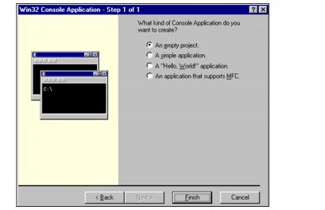

Case Studies
In this chapter, the following case studies are presented to demonstrate how the SOFTIMAGE|XSI FTK can be used. The topics covered include:
- Writing a standalone executable to print dotXSI file information—see XSIDump: Creating a Standalone Executable to Print XSI Information.
- Working with ActiveX-compliant scripting language libraries to interact with dotXSI files—see ActiveX Compliance: Manipulating dotXSI Files with VBScript and JScript.
XSIDump: Creating a Standalone Executable to Print XSI Information
XSIDump is an executable that can be used to print information from a dotXSI file to a shell window. This case study shows how to create it as a C++ compiled executable. You can use this example to learn how to use the FTK to extract scene information directly from the dotXSI file.
A Linux version of this example is available when you install the FTK for Linux, although it is not specifically discussed here.
How XSIDump Works
The XSIDump executable reads any dotXSI file and displays the following type of information:
Examples
The following examples use MonkeyFur.xsi as the file name of the dotXSI file. If you decide to test XSIDump.exe out yourself, you must first create your own dotXSI file to use as input in place of MonkeyFur.xsi. For more information on how to export a dotXSI file from SOFTIMAGE|XSI, see the Fundamentals guide.
To print the entire contents of the dotXSI file
At the command prompt, type:
XSIDump MonkeyFur.xsiThe data printed looks similar to the following:
====================================================== d:\media\xsi\test.xsi header information File version : 3.0 Format : TEXT ====================================================== dumping templates and parameters ====================================================== ------------------------------------------------------ Template name : SI_FileInfo Instance name : (PCHAR) projectName : (PCHAR) userName : username (PCHAR) savedDateTime : Thu Feb 01 17:40:22 2001 (PCHAR) originator : SOFTIMAGE|XSI Version 1.5.2000.1213 ------------------------------------------------------ Template name : SI_Scene Instance name : Scene (PCHAR) timing : FRAMES (INT) start : 1 (INT) end : 100 (FLOAT) frameRate : 29.970030 ------------------------------------------------------ Template name : SI_CoordinateSystem Instance name : (INT) handRotation : 1 (INT) uAxis : 0 (INT) vAxis : 1 (INT) xAxis : 0 (INT) yAxis : 2 (INT) zAxis : 5 ------------------------------------------------------ Template name : SI_Angle Instance name : (INT) type : 0 ------------------------------------------------------ Template name : SI_Ambience Instance name : (FLOAT) red : 0.200000 (FLOAT) green : 0.200000 (FLOAT) blue : 0.200000 ...After the information finishes spooling to the DOS shell window, it looks like this:
To print the short information from the dotXSI file
At the command prompt, type:
XSIDump MonkeyFur.xsi -sAfter the information finishes spooling to the DOS shell window, it looks like this:
To print the entire contents of the dotXSI file
At the command prompt, type:
XSIDump MonkeyFur.xsiAfter the information finishes spooling to the DOS shell window, it looks like this:
Getting Started
Before you can start coding the XSIDump executable, you need to create a new project (for more information, see To make a new project) and set up your development environment (for more information, see To set up your development environment).
To make a new project
- Launch Microsoft Visual C++.
- Select File > New and click on the Projects tab.
- Select Win32 Console Application from the list of project types, type
XSITestin the Project name text box, and click OK. - Select the An empty project option and click Finish.
- Click OK.

The Win32 Console Application window appears.

The New Project Information window appears.

The new project workspace appears in the console window. You are now ready to set up the new project.
To set up your development environment
- From the Project menu in Visual C++, choose Settings.
- Choose All Configurations from the Settings for drop-down box.
- Click the C/C++ tab and choose Code Generation from the Category drop-down box.
- Choose Multithreaded DLL from the Use run-time library drop-down box.
- Choose Preprocessor from the Category drop-down box.
- Type
__XSI_APPLICATION_, XSI_STATIC_LINKin the Preprocessor definitions text box. - Type
%XSIFTK_ROOT%\export\h\Ftkin the Additional include directories text box. - Click the Link tab and choose General from the Category drop-down box.
- Type
..\..\export\bin\XSIDump.exein the Output file name text box, and click OK. - Add
%XSIFTK_ROOT%\export\lib\XSIFTK.libto the Object/library modules text box.
The Project Settings window appears.

The Project Settings window closes and you can now create a new C++ file.
Coding the Executable
Once you have set up your environment, you can begin to code the executable.
This section illustrates the following:
- How to code the framework for XSIDump.exe—see Laying the Foundation.
- How to add the real functionality to XSIDump.exe—see Adding Code that Prints Out Information.
|
|
If you have not changed any of your project settings, follow the instructions in Getting Started before proceeding. |
Laying the Foundation
This section describes how to write the pieces of the code that can open the dotXSI file, read it, and close it. Specifically, these sections illustrate the following:
To create the skeleton of XSIDump.exe
- Select File > New and click on the Files tab.
- Select C++ Source File from the list of file types, type
main.cppin the File name text box, and click OK. - Write the calls to include these header files:
- Write the main subroutine with two arguments:
- Add the following declaration for error handing:
- Create an instantiation of the CXSIParser class called parser and perform some validation:
An empty file appears in the console window. You are now ready to begin coding.
To write code for opening, reading, and closing the dotXSI file
- Set the open mode for the parser using the CXSIParser::SetOpenMode method with the OPEN_READ mode for this task:
- Open the file using the CXSIParser::Open method and pass the name of the file to read:
- Use the CXSIParser::Read() method to read the entire file into memory and then use the CXSIParser::Close method:
|
|
If CXSIParser::Open returns anything else than SI_SUCCESS, it means that the file could not be opened and that no further reading on that file should occur. |
if(result == SI_SUCCESS)
{
_SI_CALL(parser.Read(), "CXSIParser::Read");
if(result == SI_SUCCESS)
{
_SI_CALL(parser.Close(), "CXSIParser::Close");
}
else
{
fprintf(stderr, "Error reading the file\n");
// let's attempt to close the file
parser.Close();
}
}
else
{
fprintf(stderr, "%s could not be open for reading \n", argv[1]);
}
}
Adding Code that Prints Out Information
Now that you have a working program that opens, reads, and closes a dotXSI file, you can add some functionality to print out the following:
The functionality for this information is explained in the next three sections:
This procedure adds the functionality to print the information of the file itself, including the path of the file, the version of the file format and whether the file is in ASCII or BINARY mode .
This procedure adds the output of each individual template recursively, including the type of the template (Template name), and the name of the instance of this template (Instance name). This procedure also includes a macro (INDENT) that indents the output when it finds templates embedded inside other templates (SI_MaterialLibrary).
This procedure adds all parameter information to the output. It illustrates which fields to use depending on the variant type of the data you are trying to access.
To write code for printing out file information
- Add the following function prototype at the beginning of the code:
- Write its implementation after the main function:
- Finally, write a call to it in the main function right after the file is closed:
SI_Error dumpXSIFileInformation(CXSIParser &in_Parser)
{
SI_Error result = SI_SUCCESS;
// first we dump the file information (header)
fprintf(stderr,"========================================================\n");
fprintf(stderr, "%s header information \n", in_Parser.FileName().GetText());
fprintf(stderr, "File version : %d.%d\n",
in_Parser.GetdotXSIFileVersionMajor(),
in_Parser.GetdotXSIFileVersionMinor());
if(in_Parser.GetdotXSIFormat() == FORMAT_TEXT)
{
fprintf(stderr, "Format : TEXT\n");
}
else if(in_Parser.GetdotXSIFormat() == FORMAT_BINARY)
{
fprintf(stderr, "Format : BINARY\n");
}
return result;
}
_SI_CALL(parser.Read(), "CXSIParser::Read");
if(result == SI_SUCCESS)
{
_SI_CALL(parser.Close(), "CXSIParser::Close");
// let's dump the .XSI file information
_SI_CALL(dumpXSIFileInformation(parser),
"dumpXSIFileInformation");
}
else
{
fprintf(stderr, "Error reading the file\n");
// let's attempt to close the file
To write code for printing out template information
- Add the following macro:
- Add the following function prototype:
- Write its implementation after the main function:
- CdotXSITemplate::Name() returns the type of template
- CdotXSITemplate::InstanceName() returns the instance name of this template
- Finally, write a call to dumpXSITemplatesInformation in the main function:
SI_Error dumpXSITemplatesInformation(CXSIParser &in_Parser, CdotXSITemplates *in_Templates, int spaces);
SI_Error dumpXSITemplatesInformation(CXSIParser &in_Parser,
CdotXSITemplates *in_Templates,
int spaces)
{
SI_Error result = SI_SUCCESS;
SI_Int loop;
CdotXSITemplate *pTemplate;
CSIBCString tmpString;
for(loop = 0; loop < in_Templates->GetCount(); loop++)
{
in_Templates->Item(loop, &pTemplate);
if(pTemplate != NULL)
{
INDENT;
fprintf(stderr, "-------------------------------------------------\n");
INDENT;
fprintf(stderr, "Template name : %s \n",
pTemplate->Name().GetText()); INDENT;
fprintf(stderr, "Instance name : %s \n\n",
pTemplate->InstanceName().GetText());
fprintf(stderr, "\n");
}
else
{
fprintf(stderr, "Problematic template \n");
}
_SI_CALL(dumpXSITemplatesInformation(in_Parser,
&pTemplate->Children(),
spaces + 1),
"dumpXSITemplatesInformation");
}
return result;
}
All the root templates are accessed with the CXSIParser::dotXSITemplate() method. This returns a CdotXSITemplates instance which is a collection of XSI templates. To get the number of templates inside this collection, use the CdotXSITemplates::GetCount() function. To access each item inside this collection, use the CdotXSITemplates::Item method and pass it the index to the required item as well as a pointer to a pointer of a CdotXSITemplate.
Each CdotXSITemplate provides two methods to retrieve its type and instance name:
These functions return a CSIBCString instance. You can easily retrieve a character pointer by using the CSIBCString::GetText() function.
Additionally, you can use the CdotXSITemplate::Children() to get a handle on the CdotXSITemplates collection that contains all the children templates of the current template. This is what is used in the code to recursively print out the template information.
if(result == SI_SUCCESS)
{
_SI_CALL(parser.Close(), "CXSIParser::Close");
// let's dump the .XSI file information
_SI_CALL(dumpXSIFileInformation(parser), "dumpXSIFileInformation");
_SI_CALL(dumpXSITemplatesInformation(parser, parser.dotXSITemplate(), 0),
"dumpXSITemplatesInformation");
}
else
{
fprintf(stderr, "Error reading the file\n");
// let's attempt to close the file
parser.Close();
To write code for printing out parameter information
- Add the following code at the end of the if-clause in the dumpXSITemplatesInformation function:
- Add the following local variables to the dumpXSITemplatesInformation function (new variables appear in bold):
// now we dump the parameters information
for(paramLoop = 0; paramLoop < pTemplate->Params().GetCount(); paramLoop ++)
{
pTemplate->Params().Item(paramLoop, &pParam);
INDENT;
fprintf(stderr, "(");
pParam->GetValue(&pValue);
switch(pValue.variantType)
{
case SI_VT_BOOL : fprintf(stderr,"BOOL");
tmpString.SetText(pValue.boolVal); break;
case SI_VT_BYTE : fprintf(stderr,"BYTE");
tmpString.SetText(pValue.bVal); break;
case SI_VT_UBYTE : fprintf(stderr,"UBYTE");
tmpString.SetText(pValue.ubVal); break;
case SI_VT_SHORT : fprintf(stderr,"SHORT");
tmpString.SetText(pValue.sVal); break;
case SI_VT_USHORT : fprintf(stderr,"USHORT");
tmpString.SetText(pValue.usVal); break;
case SI_VT_INT : fprintf(stderr,"INT");
tmpString.SetText(pValue.nVal); break;
case SI_VT_UINT : fprintf(stderr,"UINT");
tmpString.SetText((SI_Int) pValue.unVal); break;
case SI_VT_FLOAT : fprintf(stderr,"FLOAT");
tmpString.SetText(pValue.fVal); break;
case SI_VT_DOUBLE : fprintf(stderr,"DOUBLE");
tmpString.SetText((SI_Float) pValue.dVal); break;
case SI_VT_LONG : fprintf(stderr,"LONG");
tmpString.SetText(pValue.lVal); break;
case SI_VT_ULONG : fprintf(stderr,"ULONG");
tmpString.SetText((SI_Int) pValue.ulVal); break;
case SI_VT_PBOOL : fprintf(stderr,"PBOOL"); break;
case SI_VT_PBYTE : fprintf(stderr,"PBYTE"); break;
case SI_VT_PUBYTE : fprintf(stderr,"PUBYTE"); break;
case SI_VT_PSHORT : fprintf(stderr,"PSHORT"); break;
case SI_VT_PUSHORT : fprintf(stderr,"PUSHORT"); break;
case SI_VT_PINT : fprintf(stderr,"PINT"); break;
case SI_VT_PUINT : fprintf(stderr,"PUINT"); break;
case SI_VT_PFLOAT : fprintf(stderr,"PFLOAT"); break;
case SI_VT_PDOUBLE : fprintf(stderr,"PDOUBLE"); break;
case SI_VT_PLONG : fprintf(stderr,"PLONG"); break;
case SI_VT_PULONG : fprintf(stderr,"PULONG"); break;
case SI_VT_PCHAR : fprintf(stderr,"PCHAR");
tmpString.SetText(pValue.p_cVal); break;
case SI_VT_PPCHAR : fprintf(stderr,"PPCHAR"); break;
case SI_VT_PVOID : fprintf(stderr,"PVOID"); break;
}
fprintf(stderr,")");
fprintf(stderr, " %s : ", pParam->Name().GetText());
switch(pValue.variantType)
{
case SI_VT_BOOL :
case SI_VT_BYTE :
case SI_VT_UBYTE :
case SI_VT_SHORT :
case SI_VT_USHORT :
case SI_VT_INT :
case SI_VT_UINT :
case SI_VT_FLOAT :
case SI_VT_DOUBLE :
case SI_VT_LONG :
case SI_VT_ULONG :
case SI_VT_PCHAR : fprintf(stderr, "%s\n", tmpString.GetText()); break;
case SI_VT_PBOOL :
case SI_VT_PBYTE :
case SI_VT_PUBYTE :
case SI_VT_PSHORT :
case SI_VT_PUSHORT :
case SI_VT_PINT :
case SI_VT_PUINT :
case SI_VT_PFLOAT :
case SI_VT_PDOUBLE :
case SI_VT_PLONG :
case SI_VT_PULONG :
case SI_VT_PPCHAR : fprintf(stderr, "\n");
for(arrayLoop = 0; arrayLoop < pValue.numElems; arrayLoop ++)
{
INDENT;
switch(pValue.variantType)
{
case SI_VT_PBOOL :
tmpString.SetText(pValue.p_boolVal[arrayLoop]);
break;
case SI_VT_PBYTE :
tmpString.SetText(pValue.p_bVal[arrayLoop]); break;
case SI_VT_PUBYTE :
tmpString.SetText(pValue.p_ubVal[arrayLoop]); break;
case SI_VT_PSHORT :
tmpString.SetText(pValue.p_sVal[arrayLoop]); break;
case SI_VT_PUSHORT :
tmpString.SetText(pValue.p_usVal[arrayLoop]); break;
case SI_VT_PINT :
tmpString.SetText(pValue.p_nVal[arrayLoop]); break;
case SI_VT_PUINT :
tmpString.SetText((SI_Int)pValue.p_unVal[arrayLoop]);
break;
case SI_VT_PFLOAT :
tmpString.SetText(pValue.p_fVal[arrayLoop]); break;
case SI_VT_PDOUBLE :
tmpString.SetText((SI_Float)pValue.p_dVal[arrayLoop]);
break;
case SI_VT_PLONG :
tmpString.SetText(pValue.p_lVal[arrayLoop]); break;
case SI_VT_PULONG :
tmpString.SetText((SI_Int)pValue.p_ulVal[arrayLoop]);
break;
case SI_VT_PPCHAR :
tmpString.SetText(pValue.pp_cVal[arrayLoop]); break;
}
fprintf(stderr, "%s\t", tmpString.GetText());
if((arrayLoop % 3) == 2)
{
fprintf(stderr, "\n");
}
fprintf(stderr, "\n");
break;
case SI_VT_PVOID : INDENT; fprintf(stderr, "VOID values \n");
break;
break;
}
}
Each CdotXSITemplate contains a collection of parameters accessible through the CdotXSITemplate::Params() method. This returns a CdotXSIParams instance. Just like a CdotXSITemplates instance, you can get the count and the items using the CdotXSIParams::GetCount and CdotXSIParams::Item method.
Each CdotXSIParam has a value you can access through the GetValue/SetValue functions. This uses a SI_TinyVariant which is a smaller, portable version of the Microsoft variant. You can use its SI_TinyVariant::VariantType field to get the type of the value and the different fields depending on the type. The example illustrates which fields to use depending on the variant type.
Using XSIDump.exe
To build main.cpp into a standalone executable, you need to compile and build it.
To compile and build main.cpp
Select Build > Build XSIDump.exe to create the executable from main.cpp.
You can now run it from within a DOS shell using the syntax described in How XSIDump Works.
|
|
To read the complete code in the XSIDump example files, see the contents of the %XSIFTK_ROOT%\src\XSIDump directory. |
ActiveX Compliance: Manipulating dotXSI Files with VBScript and JScript
The ActiveX project uses the Component Object Model (COM) to create an ActiveX-compliant library that exposes a subset of the FTK function library to any scripting language, such as VBScript or JScript. You can compile this sample code and use it to perform simple operations on your dotXSI files.
This example is for Windows only.
How It Works
This section of the case study presents a fairly standardset of documentation on the available objects.
Objects
FileHandler
The FileHandler object gives you access to the dotXSI file.
Methods
Properties
Templates
The Templates object is the collection of every Template in the dotXSI file.
Methods
Properties
Template
The Template object allows you to get information about a particular template in the dotXSI file. It also gives you access to the collection of Params (parameters) for that template.
Properties
Params
The Params object gives you access to the collection of parameters on the indicated template.
Methods
Properties
Param
The Param object gives you access to the values of the parameter.
Properties
Methods
Add (Params)
Adds a new Parameter to the parameter collection at the position you indicate.
Syntax
Parameters
|
Parameter
|
Type
|
Description
|
|---|---|---|
|
Param
|
File Name to use for new dotXSI file.
|
|
|
Pos
|
Long
|
Index of the new parameter in the parameter collection (Params).
|
Example
set oFileHandler = CreateObject("dotXSIObj.FileHandler")
oFileHandler.Open("C:\\Examples.xsi")
oFileHandler.Read
set oFirstTemplate = oFileHandler.RootTemplates(0)
set oNewParameter = oFirstTemplate.Params.Add
logmessage oNewParameter.Name & " = " & oNewParameter.Value
Add (Templates)
Adds a new Template to a dotXSI file at the position you indicate.
Syntax
Parameters
|
Parameter
|
Type
|
Description
|
|---|---|---|
|
Template
|
File Name to use for new dotXSI file.
|
|
|
Pos
|
Long
|
Index of the position for the new template.
|
Example
set oTarget = CreateObject("dotXSIObj.FileHandler")
set oSource = CreateObject("dotXSIObj.FileHandler")
oTarget.Open("C:\\Examples.xsi")
oTarget.Read
for i = 0 to oTarget.RootTemplates.GetCount - 1
oSource.RootTemplates.Add oTarget.RootTemplates.Item( i ), -1
next
Close (FileHandler)
This method closes an open dotXSI file.
Syntax
Example
set oSourceFile = CreateObject( "dotXSIObj.FileHandler" ) oSourceFile.Open( "C:\\Examples.xsi" ) oSourceFile.Close
Create (FileHandler)
Creates a new dotXSI file in either ASCII or Binary format.
Syntax
Parameters
|
Parameter
|
Type
|
Description
|
|---|---|---|
|
Filename
|
String
|
File Name to use for new dotXSI file.
|
|
OpenMode
|
String
|
Indicates whether dotXSI file will be in ASCII or Binary format.
Possible Values:
|
Return Value
FileHandler object
Example
set oSource = CreateObject("dotXSIObj.FileHandler")
oSource.Create "C:\myOutput.xsi", "DOTXSI_FORMAT_TEXT"
Open (FileHandler)
Opens an existing dotXSI file.
Syntax
Parameters
Return Value
FileHandler object
Example
Read (FileHandler)
Reads a dotXSI file into memory.
Syntax
Example
set oSourceFile = CreateObject( "dotXSIObj.FileHandler" ) oSourceFile.Open( "C:\\Examples.xsi" ) oSourceFile.Read
Remove (Params)
Removes the indicated parameters from the parameter collection.
Syntax
Parameters
Example
set oFile = CreateObject("dotXSIObj.FileHandler")
oFile.Open("C:\\Examples.xsi")
oFile.Read
set oParameters = oFile.RootTemplates(0).Params
oParameters.Remove(0)
Remove (Templates)
Removes the indicated template from the dotXSI file.
|
|
Nested templates in a dotXSI file are considered Children (Template) of the root templates (ie., top level templates). For a list of root templates and their children, see Template Reference. |
Syntax
Parameters
Example
set oFile = CreateObject("dotXSIObj.FileHandler")
oFile.Open("C:\\Examples.xsi")
oFile.Read
set oTemplate = oFile.RootTemplates.Item( 5 )
Application.LogMessage oTemplate.Children.GetCount
oTemplate.Children.Remove(0)
oTemplate.Params.Item(0).value = oTemplate.Params.Item( 0).value - 1
Application.LogMessage oTemplate.Children.GetCount
Write (FileHandler)
Writes out the information to the file.
Syntax
Example
set oTargetFile = CreateObject( "dotXSIObj.FileHandler" ) oTargetFile.Open( "C:\\Examples.xsi" ) oTargetFile.Write
Properties
FileVersionMajor (FileHandler)
FileVersionMinor (FileHandler)
Children (Template)
Gets all the templates that are nested below the current (root) template as a collection.
Return Value
Example
set oSourceFile = CreateObject("dotXSIObj.FileHandler")
oSourceFile.Open("C:\\Examples.xsi")
oSourceFile.Read
set oTemplate = oSourceFile.RootTemplates.Item( 5 )
logmessage oTemplate.Children.GetCount
oTemplate.Children.Remove( 0 )
oTemplate.Params.Item( 0).value = oTemplate.Params.Item( 0).value - 1
Application.LogMessage oTemplate.Children.GetCount
CreateParam (Params)
Gets a new (empty) parameter. You can use the Add (Params) method to add it to the parameter collection after populating it.
Return Value
Example
set oFile = CreateObject("dotXSIObj.FileHandler")
oFile.Open("C:\\Examples.xsi")
oFile.Read
set oTemplates = oFile.RootTemplates
set oNewTemplate = oTemplates.CreateTemplate
set oNewParameter = oNewTemplate.Params.CreateParam
oNewParameter.Name = "BlueDog"
oNewParameter.Value = 3.00000
CreateTemplate (Templates)
Gets a new (empty) template. You can use the Add (Templates) method to add it to the dotXSI file after populating it.
Return Value
Example
set oFile = CreateObject("dotXSIObj.FileHandler")
oFile.Open("C:\\Examples.xsi")
oFile.Read
set oTemplate = oFile.RootTemplates(5)
set oNewTemplate = oTemplate.CreateTemplate
oNewTemplate.TemplateName = "XSI_Material"
oNewTemplate.InstanceName = "Car_Door"
' ...
oFile.RootTemplates.Add( oNewTemplate, oTemplate.Children.GetCount )
CreateTemplates (Template)
Builds a collection in order to accumulateTemplates.
Return Value
Example
set oFile = CreateObject("dotXSIObj.FileHandler")
oFile.Create "C:\\log.txt", "DOTXSI_FORMAT_TEXT"
set oTemplCollection = oFile.CreateTemplates
for each t in oTemplCollection
' ...
next
FileVersionMajor (FileHandler)
Gets the major version of the dotXSI file. The major version is specified in the File Headertemplate.
Return Value
Long
Example
set oSource = CreateObject("dotXSIObj.FileHandler")
Set fso = CreateObject("Scripting.FileSystemObject")
oSource.Open("C:\\Examples.xsi")
oSource.Read
Set oLogFile = fso.CreateTextFile("c:\\log.txt", True)
oLogFile.WriteLine ( oSource.FileVersionMajor & " " & oSource.FileVersionMinor )
FileVersionMinor (FileHandler)
Gets the minor version of the dotXSI file. The minor version is specified in the File Headertemplate.
Return Value
Long
Example
set oSource = CreateObject("dotXSIObj.FileHandler")
Set fso = CreateObject("Scripting.FileSystemObject")
oSource.Open("C:\\Examples.xsi")
oSource.Read
Set oLogFile = fso.CreateTextFile("c:\\log.txt", True)
oLogFile.WriteLine ( oSource.FileVersionMajor & " " & oSource.FileVersionMinor )
GetCount (Params)
Gets the location of the index in the Params collection.
Return Value
Long
Example
set oFile = CreateObject("dotXSIObj.FileHandler")
oFile.Open("C:\\Examples.xsi")
oFile.Read
set fso = CreateObject("Scripting.FileSystemObject")
set oLogFile = fso.CreateTextFile("c:\\log.txt", True)
set oTemplate = oFile.RootTemplates.Item( 5 )
for iParamIndex = 0 to oTemplate.Params.GetCount - 1
set oCurrParam = oTemplate.Params.Item( iParamIndex )
vParamValue = oCurrParam.Value
if typename ( vParamValue ) <> "Variant()" then
oLogFile.WriteLine( " " _
& oCurrParam.Name & "[" _
& oCurrParam.Value & "]" )
else
oLogFile.WriteLine( " [[" & iParamIndex & "]] " & oCurrParam.Name _
& " is an array of index [" & LBound( vParamValue ) & "," _
& UBound( vParamValue ) & "]" )
for iValueIndex = LBound( vParamValue ) to UBound( vParamValue )
oLogFile.WriteLine( " [" _
& iValueIndex & "] = " _
& vParamValue( iValueIndex ) )
next
end if
next
GetCount (Templates)
Gets the location of the index in the Templates collection.
Return Value
Long
Example
set oSourceFile = CreateObject("dotXSIObj.FileHandler")
oSourceFile.Open("C:\\Examples.xsi")
oSourceFile.Read
set oTemplate = oSourceFile.RootTemplates.Item( 5 )
Application.LogMessage oTemplate.Children.GetCount
oTemplate.Children.Remove( 0 )
oTemplate.Params.Item( 0).Value = oTemplate.Params.Item( 0).Value - 1
Application.LogMessage oTemplate.Children.GetCount
InstanceName (Template)
Gets or sets the name of the template instance (ie., the name of the material for an XSI_Material template).
Return Value
String
Example
set oFile = CreateObject("dotXSIObj.FileHandler")
oFile.Open("C:\\Examples.xsi")
oFile.Read
set fso = CreateObject("Scripting.FileSystemObject")
set oLogFile = fso.CreateTextFile("c:\\log.txt", True)
set oTemplate = oFile.RootTemplates(0)
oLogFile.WriteLine ( oTemplate.TemplateName & " " & oTemplate.InstanceName )
Item (Params)
Gets the Parameter found at the indicated position in the Params collection.
Return Value
Example
set oFile = CreateObject("dotXSIObj.FileHandler")
oFile.Open("C:\\Examples.xsi")
oFile.Read
set fso = CreateObject("Scripting.FileSystemObject")
set oLogFile = fso.CreateTextFile("c:\\log.txt", True)
set oTemplate = oFile.RootTemplates.Item( 5 )
for iParamIndex = 0 to oTemplate.Params.GetCount - 1
set oCurrParam = oTemplate.Params.Item( iParamIndex )
vParamValue = oCurrParam.Value
if typename ( vParamValue ) <> "Variant()" then
oLogFile.WriteLine( " " & oCurrParam.Name _
& "[" & oCurrParam.Value & "]" )
else
oLogFile.WriteLine( " [[" & iParamIndex & "]] " _
& oCurrParam.name & " is an array of index [" _
& LBound( vParamValue ) & "," & UBound( vParamValue ) & "]" )
for iValueIndex = LBound( vParamValue ) to UBound( vParamValue )
oLogFile.WriteLine( " [" & iValueIndex & "] = " _
& vParamValue( iValueIndex ) )
next
end if
next
Item (Templates)
Gets the Template found at the indicated position in the Templates collection.
Return Value
Example
set oSourceFile = CreateObject("dotXSIObj.FileHandler")
oSourceFile.Open("C:\\Examples.xsi")
oSourceFile.Read
set oTemplate = oSourceFile.RootTemplates.Item( 5 )
Application.LogMessage oTemplate.Children.GetCount
oTemplate.Children.Remove( 0 )
oTemplate.Params.Item( 0).value = oTemplate.Params.Item( 0).value - 1
Application.LogMessage oTemplate.Children.GetCount
Name (Param)
Gets or sets the name of the parameter.
|
|
For information on the parameters used in individual templates, see Template Reference. |
Return Value
String
Example
set oFile = CreateObject("dotXSIObj.FileHandler")
oFile.Open("C:\\Examples.xsi")
oFile.Read
set fso = CreateObject("Scripting.FileSystemObject")
set oLogFile = fso.CreateTextFile("c:\\log.txt", True)
set oTemplate = oFile.RootTemplates.Item( 5 )
for iParamIndex = 0 to oTemplate.Params.GetCount - 1
set oCurrParam = oTemplate.Params.Item( iParamIndex )
vParamValue = oCurrParam.Value
if typename ( vParamValue ) <> "Variant()" then
oLogFile.WriteLine( " " & oCurrParam.Name & "[" _
& oCurrParam.Value & "]" )
else
oLogFile.WriteLine( " [[" & iParamIndex & "]] " & oCurrParam.Name _
& " is an array of index [" & LBound( vParamValue ) & "," _
& UBound( vParamValue ) & "]" )
for iValueIndex = LBound( vParamValue ) to UBound( vParamValue )
oLogFile.WriteLine( " [" & iValueIndex & "] = " _
& vParamValue( iValueIndex ) )
next
end if
next
Params (Template)
Gets the collection of Params.
Return Value
Example
set oSourceFile = CreateObject("dotXSIObj.FileHandler")
oSourceFile.Open("C:\\Examples.xsi")
oSourceFile.Read
set oTemplate = oSourceFile.RootTemplates.Item( 5 )
Application.LogMessage oTemplate.Children.GetCount
oTemplate.Children.Remove( 0 )
oTemplate.Params.Item( 0).Value = oTemplate.Params.Item( 0).Value - 1
Application.LogMessage oTemplate.Children.GetCount
Parent (Template)
Gets or sets the parent for the template.
|
|
Setting the parent property on a template allows you to specify the hierarchy of the dotXSI file. For instance, if the template object is referring to an XSI_Shader template, you can set the Parent property to the XSI_Material under which you want it to appear. |
Return Value
Example
set oSourceFile = CreateObject("dotXSIObj.FileHandler")
oSourceFile.Open("C:\\Examples.xsi")
oSourceFile.Read
set oChild = oSourceFile.RootTemplates(5).children(0)
set Parent = oChild.Parent
' ...
RootTemplates (FileHandler)
Gets all the root templates in the dotXSI file as a collection of Template objects.
Return Value
Example
set oSourceFile = CreateObject("dotXSIObj.FileHandler")
oSourceFile.Open("C:\\Examples.xsi")
oSourceFile.Read
set fso = CreateObject("Scripting.FileSystemObject")
set oLogFile = fso.CreateTextFile("c:\\log.txt", True)
oLogFile.WriteLine ( "Number of RootTemplates: " _
& oSourceFile.RootTemplates.GetCount )
TemplateName (Template)
Gets or sets the name (instance) of the template (for example, SI_Ambience).
|
|
You can only set the TemplateName once after you create the template. It is initialized using the default set of parameters. |
Return Value
String
Example
set oSourceFile = CreateObject("dotXSIObj.FileHandler")
oSourceFile.Open("C:\\Examples.xsi")
oSourceFile.Read
set fso = CreateObject("Scripting.FileSystemObject")
set oLogFile = fso.CreateTextFile("c:\\log.txt", True)
set oTemplate = oSourceFile.RootTemplates(0)
oLogFile.WriteLine ( oTemplate.TemplateName & " " & oTemplate.InstanceName )
UserDataType (Template)
Gets or sets the user data type for the Template.
Return Value
String
Example
set oSourceFile = CreateObject("dotXSIObj.FileHandler")
oSourceFile.Open("C:\\Examples.xsi")
oSourceFile.Read
set fso = CreateObject("Scripting.FileSystemObject")
set oLogFile = fso.CreateTextFile("c:\\log.txt", True)
oLogFile.WriteLine ( oSourceFile.FileVersionMajor & " " _
& oSourceFile.FileVersionMinor )
oLogFile.WriteLine ( "Number of RootTemplates " _
& oSourceFile.RootTemplates.GetCount )
for each oTemplate in oSourceFile.RootTemplates
oLogFile.WriteLine ( "User Data Type of " & oTemplate.TemplateName _
& ": " & oTemplate.InstanceName & " = " & oTemplate.UserDataType )
next
UserFlags (Template)
Gets or sets the user flags for the Template.
Return Value
Long
Example
set oSourceFile = CreateObject("dotXSIObj.FileHandler")
oSourceFile.Open("C:\\Examples.xsi")
oSourceFile.Read
set fso = CreateObject("Scripting.FileSystemObject")
set oLogFile = fso.CreateTextFile("c:\\log.txt", True)
oLogFile.WriteLine ( oSourceFile.FileVersionMajor & " " _
& oSourceFile.FileVersionMinor )
oLogFile.WriteLine ( "Number of RootTemplates " _
& oSourceFile.RootTemplates.GetCount )
for each oTemplate in oSourceFile.RootTemplates
oLogFile.WriteLine ( "User Flags for " & oTemplate.TemplateName _
& ": " & oTemplate.InstanceName & " = " & oTemplate.UserFlags )
next
Value (Param)
Gets or sets the value of the Parameter.
|
|
For information on the parameters used in individual templates, see Template Reference. |
Return Value
Variant
Example
set oFile = CreateObject("dotXSIObj.FileHandler")
oFile.Open("C:\\Examples.xsi")
oFile.Read
set fso = CreateObject("Scripting.FileSystemObject")
set oLogFile = fso.CreateTextFile("c:\\log.txt", True)
set oTemplate = oFile.RootTemplates.Item( 5 )
for iParamIndex = 0 to oTemplate.Params.GetCount - 1
set oCurrParam = oTemplate.Params.Item( iParamIndex )
vParamValue = oCurrParam.Value
if typename ( vParamValue ) <> "Variant()" then
oLogFile.WriteLine( " " & oCurrParam.Name & "[" _
& oCurrParam.Value & "]" )
else
oLogFile.WriteLine( " [[" & iParamIndex & "]] " & oCurrParam.Name _
& " is an array of index [" & LBound( vParamValue ) & "," _
& UBound( vParamValue ) & "]" )
for iValueIndex = LBound( vParamValue ) to UBound( vParamValue )
oLogFile.WriteLine( " [" & iValueIndex & "] = " _
& vParamValue( iValueIndex ) )
next
end if
next
A First Glance
This table indicates the names of the header files used in the dotXSIObj project and which header files they correspond to in the standard FTK libraries:
Each of these files contains definitions for the five matching classes in the ActiveX project.
A Closer Look
As an example, the XSIParser.h file defines the GetdotXSIFileVersionMajor() function:
This is the origin of the FileHandler.FileVersionMajor property in the dotXSIObj project, which returns a Long value.
Example: Using the ActiveX FTK Object
This example creates an VBScript script that can be used to print information from a dotXSI file to the DOS shell window.
|
|
To see the case study for the C++ version of XSIDump, see XSIDump: Creating a Standalone Executable to Print XSI Information. |
' Declare a function to dump one template
' This function will first dump all the parameters and then recursively calls
' itself for all its chldren.
Sub dumponetemplate( inputTemplate, indentation )
' Define the Variables
dim val, templateParam, paramIndex, ChildrenIndex, child
' Write out the name of the template name & instance name
' and open a brace.
' i.e. SI_Mesh cube {
outputFile.WriteLine ( Space( indentation ) & inputTemplate.TemplateName & " " &
inputTemplate.InstanceName & "{" )
' Now for each parameters that we have
for paramIndex = 0 to inputTemplate.Params.GetCount - 1
set templateParam = inputTemplate.Params.Item( paramIndex )
val = templateParam.value
' As dotXSI stores most of its values in float, then we just convert to single
' to avoid the rouding errors
if typename ( val ) = "Double" then
val = CSng( val )
end if
if typename ( val ) <> "Variant()" then
outputFile.WriteLine( Space( indentation +2 ) & templateParam.name & " =
[" & val & "]" )
else
outputFile.WriteLine( Space( indentation +2 ) & "[[ParamIndex = " &
paramIndex & "]] " & templateParam.name & " is an array of index [" & LBound(
val ) & "," & UBound( val ) & "]" )
for index = LBound( val ) to UBound( val )
outputFile.WriteLine( Space( indentation + 6 ) & " [" & index & "] = "
& val( index ) )
next
end if
next
' Children
for ChildrenIndex = 0 to inputTemplate.Children.GetCount - 1
call dumponetemplate( inputTemplate.Children.Item ( ChildrenIndex ) ,
indentation + 2 )
next
' Close the opening brace
outputFile.WriteLine( Space( indentation ) & "}" )
outputFile.WriteLine
end Sub
' Create the Variables
dim outputFile, fso, dotXSIFile, dotXSIOutputFile
' Create two handlers (one to read and one to write the dotXSI file)
set dotXSIFile = CreateObject("dotXSIObj.FileHandler")
set dotXSIOutputFile = CreateObject("dotXSIObj.FileHandler")
' Create the FileSystemObject so we can create file for output
Set fso = CreateObject("Scripting.FileSystemObject")
' Open and Read the dotXSI file
dotXSIFile.Open("C:\\test.xsi")
dotXSIFile.Read
' Create the log file for the output
Set outputFile = fso.CreateTextFile("c:\\log.txt", True)
' Output the Version of the file and the Count of top level templates
outputFile.WriteLine ( "FileVersion " &dotXSIFile.FileVersionMajor & " " &
dotXSIFile.FileVersionMinor )
outputFile.WriteLine ( "Number of RootTemplates " &
dotXSIFile.RootTemplates.GetCount )
outputFile.WriteLine
' Dump all the root templates recursively
'
for i = 0 to dotXSIFile.RootTemplates.GetCount - 1
set child = dotXSIFile.RootTemplates.Item( i )
call dumponetemplate( child, 0 )
next
'
' Exercise to copy one dotXSI file to another....
' The idea is simply to copy all the templates from one FileHandler to another
' and then write the dotXSIOutputFile'
' Copy to Output
for i = 0 to dotXSIFile.RootTemplates.GetCount - 1
dotXSIOutputFile.RootTemplates.Add dotXSIFile.RootTemplates.Item( i ), -1
next
' Create a new dotXSIFile in text mode
dotXSIOutputFile.Create "C:\output.xsi", "DOTXSI_FORMAT_TEXT"
' Write it
dotXSIOutputFile.Write
' Close all files and log message
dotXSIOutputFile.Close
dotXSIFile.Close
outputFile.Close
logmessage "Done!"
|
|